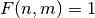
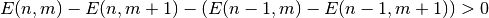
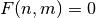

Implementation of Fingerprinting¶
Fingerprinting based on Energy Differences “A Highly robust Audio Fingerprinting System” by Haitsma & Kalker
platform: Linux synopsis: Fingerprinting based on Energy Differences
- fingerprint_energy_diff.calculate_difference(frames_energy)¶
calculate difference of energies
Implementation following paper “A Highly Robust Audio Fingerprinting System”
 if 
 if

Parameters: frames_energy (scipy.array) – frames of energys Returns: fingerint
- fingerprint_energy_diff.calculate_energy(frames_frequency, frequency_band_length)¶
divide into frequency bands and calculate energy
Optional TODO: Implement band range (bottom and top)
Parameters: - frames_frequency (scipy.array) – scipy.array with the frames in frequency domain
- frequency_band_length (int) – length of every frequency band
Returns: frames_energy – Two-dimensional array with energy list per Frame
- fingerprint_energy_diff.calculate_fingerprint(data, samplerate)¶
calculate fingerprint of given data
Parameters: - data (list) – Should be a one dimensional vector, that holds the audiodata in mono
- samplerate (int) – Samplerate of audio data
Returns: fingerprint
- fingerprint_energy_diff.frames_fft(frames, weighted=True)¶
doing fast fourier transformations on each frame vector in frames
Optional TODO: Implement filter
Parameters: - frames (scipy.array) – input scipy.array of audio frames
- weighted (bool) – Should it be weighted by hamming-window?
Returns: frames_frequency – Frequencies per frame
- fingerprint_energy_diff.get_fingerprint(data, samplerate)¶
Just a wrapper of calculate_fingerprint to get the first 512 bits only.
Parameters: - data (list) – Should be a one dimensional vector, that holds the audiodata in mono
- samplerate (int) – Samplerate of audio data
Returns: fingerprint – 512 bit fingerprint
- fingerprint_energy_diff.get_frames(data, samplerate, overlap_factor=0.0)¶
Split data into frames
Parameters: - data (scipy.array) – One-dimensional scipy.array with the audio data
- samplerate (int) – samplerate of data
Returns: frames